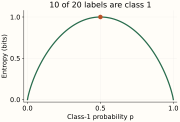
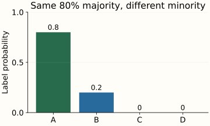

Binary Entropy
Take 20 labeled rows. If all 20 have label 0, there is no uncertainty about the label of a randomly selected row. If 10 have label 0 and 10 have label 1, knowing only those counts leaves the label maximally uncertain. Binary entropy describes the entire range between these cases.
The previous chapter defined entropy as probability-weighted surprise. Here there are only two labels, so one probability determines the whole distribution. We will read the curve, mix two populations, and compare entropy with majority-class error.
Build the curve from two weighted terms
Let $p$ be the probability of label 1. Label 0 then has probability $1-p$. Write $h(p)$ for the entropy of this binary distribution. Substituting the two probabilities into the general formula gives
For 18 label-1 rows and 2 label-0 rows, $p=0.9$. The common label contributes about 0.1368 bits to the average; the rare label contributes about 0.3322 bits. Total entropy is 0.4690 bits. The rare label is more surprising when observed, but its term still includes its 10% frequency.

10 labels of each class: entropy is 1 bit and majority-class error is 50%.
{kind=link}
The curve is symmetric. Swapping the names of labels 0 and 1 replaces $p$ by $1-p$ without changing the uncertainty. That is why 2 and 18 positive labels have the same entropy, as do 5 and 15.
At $p=0$ or $p=1$, the label is certain and entropy is zero. The zero-probability term uses its limiting value, as explained in the foundation chapter. At $p=1/2$, both possible labels carry one bit of surprise, so the average is one bit. This is the maximum for a binary label.
Mixing populations can hide useful information
Suppose group A has a 10% positive-label rate and group B has a 90% positive-label rate. Each group has entropy about 0.469 bits. If we mix them equally and forget which group a row came from, the positive-label rate becomes 50%, with entropy one bit.
The additional uncertainty came from hiding the group identity. If that identity is known, the expected remaining entropy is still 0.469 bits: average the uncertainty within each group. If it is hidden, first average the probabilities and then compute entropy. These two orders of calculation give different answers.
With equal mixing: hidden-group entropy is 1 bit; known-group entropy is 0.469 bits.
This is concavity: entropy of the mixed distribution is at least the weighted average of the component entropies. It need not exceed every individual component’s entropy. For groups with distinct label proportions and positive mixing weights, there is extra uncertainty from not knowing the group.
At equal mixing, learning the group removes about 1 − 0.469 = 0.531 bits of uncertainty on average. This is the idea behind information gain in a decision tree. A split is useful when the branch tells us something about the label. A balanced parent can therefore be easy to predict after observing an informative feature.
Optional mathematics: why the top is flat and the edges are steep
Differentiate the binary entropy curve
For $0<p<1$, write the base-2 logarithms using natural logs: dividing by $\ln 2$ changes nats to bits. A prime means differentiation with respect to $p$. The product rule gives
The first derivative is positive below 1/2, zero at 1/2, and negative above 1/2. The second derivative is negative everywhere inside the interval, confirming strict concavity and the unique maximum at 1/2. Near the endpoints, the slope becomes unbounded even though entropy itself tends to zero.
For a small numerical comparison, moving from p=0 to p=0.01 raises entropy from 0 to about 0.0808 bits. Moving from p=0.50 to p=0.51 lowers entropy by only about 0.00029 bits. Small changes near certainty can therefore change entropy much more than equally sized changes near the balanced point.
Entropy preserves more information than an error rate
For a constant majority-label prediction in a binary population, the error rate is the minority probability: the smaller of $p$ and $1-p$. A 90/10 population therefore has 10% error and about 0.469 bits of entropy. One quantity counts wrong decisions; the other averages the surprise of the full label distribution.
With more than two labels, even fixing the majority probability leaves different possible entropies. In all three distributions below, predicting A makes an error 20% of the time. What changes is how that 20% is divided among B, C, and D.

Majority error stays 20%; entropy is about 0.7219 bits.
{kind=link}
The entropies are about 0.7219, 0.9219, and 1.0389 bits. When the minority outcome has more possible identities, its uncertainty grows. The general maximum for four equally likely labels is two bits, as in the foundation example.
Label entropy alone does not tell you how accurate a feature-based classifier can be. The mixture example already showed that extra information can reduce uncertainty. The next chapter instead fixes a target distribution and evaluates the probabilities assigned by a model.
The reproduction script exports all compositions and mixtures and ten plots. It reuses the validated entropy function; the environment includes SciPy for an independent numerical comparison.
References and further reading
- Shannon: entropy properties and binary curve — symmetry, uncertainty, and averaging over alternatives.
- D2L: Information Theory — conditional information and uncertainty.
- SciPy entropy — independent calculation with a specified logarithmic base.